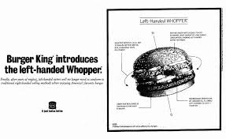
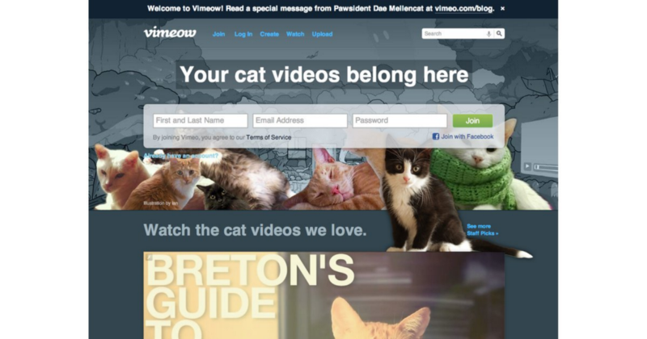
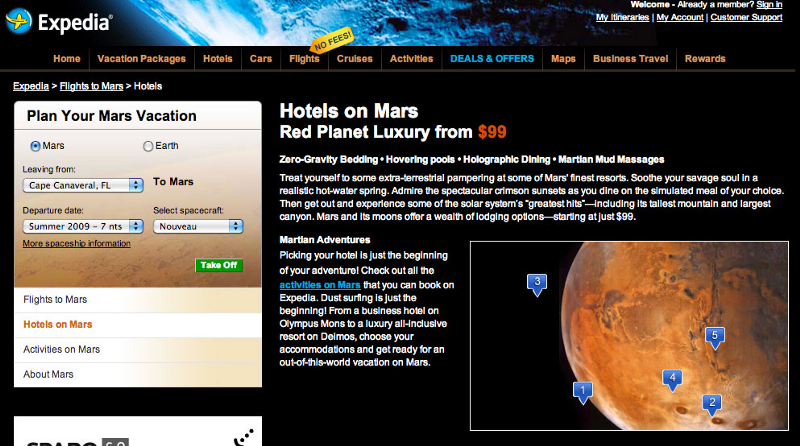
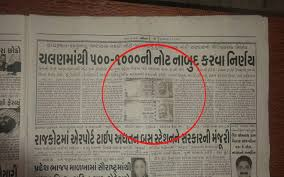

April Fool’s day is a day of pranks, practical jokes and fake rumours (oh wait, that’s like everyday these days). Some of the best memories for people is the pranks they gave to their friends or were at the receiving end of. Coupled with the fact that April Fool’s coincides with Easter this year, you can already see where the pranks will be this year…
But it’s not just you and me who are in on this.
Big organisations and news broadcasters are also more than happy to take part in the shenanigans and have created memorable incidents over the years with their publicity stunts. Here are some of the best pranks by the biggest.
1. British Broadcasting Company
The BBC, who are considered by many across the world as the closest thing to objective and factual news, have often used this reputation to fit in a few mischievous stories of their own! They are credited with the world’s first televised April Fool’s prank with a three minute report on the ‘spaghetti farms of Switzerland’ where a mild winter had apparently led to a bumper crop of pasta. This led to lots of viewers calling the BBC and asking them for the procedure on how to grow their own spaghetti which allegedly led to a better response from the BBC:
“place a sprig of spaghetti in a tin of tomato sauce and hope for the best”While the BBC has done it’s fair share of fake pranks over the years, this first attempt stands out for how many fell for it, with the British population not being aware of spaghetti beyond the tinned cans and the respectable voice of distinguished broadcaster Richard Dimbleby fooling a large section of the population.
2.Google

Google has been well known for coming up with some of the most ingenious April Fool’s day specials across their large range of services. Here are some of their comedy gold moments over the years:
-A web course on how to “make uninformed business decisions on a whim by following your gut instincts and applying simple guesswork techniques.” (2014).
Do we need a course for something we all do??
-Google Wind that links the country’s 1,170 windmills together using “machine learning [that] enables all the mills to collaborate.” Once those windmills are linked, they are able to literally blow clouds out of the sky to allow the country to have more sun-filled days.(2017).
Wow. Pure genius.
-Google TiSP( Toilet Internet Service Provider) which uses standard toilet and sewage lines to provide free Internet connectivity at speeds upto 8 Mbps. To use it, one just needs to drop a Google fibre cable into the toilet and flush it.
But it’s not just pranks that they do on April Fool’s day: they actually do real product launches on the ocassion too. The most remarkable one being in 2004, offering 1GB storage space for their then-new email service called Gmail (ring a bell?) when their competitiors offered only 1–2 MB of space.
3. Burger King
As it is left handed people have it bad enough. They just can’t seem to get things tailored to their needs. And to compound their miseries, Burger King decided that trolling them on April Fool’s day was a darned good idea.
On April 1, 1998, Burger King had a full page advertisement regarding the addition of a new item into the menu: The left handed whooper. Essentially, this special whooper has all the same ingredients as that of the normal one, but the twist being that all ingredients would be placed 180 degrees for the lefties.
Naturally this led to great curiosity as people flooded the nearest store asking for this special whooper. Even right handed people started demanding their own whoopers (what?). This may be stating the obvious, but Burger King clearly won the day.
4. Vimeo
Vimeo is one of the largest video sites out there. People can use it to share, view and upload videos and they were the first ones to support high definition videos. Also, fun fact, people love cats. Cat videos are quite the rage. Any picture with a cat, and you are guaranteed people will go ‘Awww….such a cute kitty’ or something to that effect.
What happens when you combine these two things? A brilliant April Fool prank idea! The blog entry by Vimeo looks so serious that you would actually see this idea come true!
We’ve been building an innovative platform — one that you can sit on and survey your domain; tenderly rub up against; or scratch fervently, as if trying to claw the eyes out of the human who refuses to put more food in your bowl. It’s a place to hide when people come over, and a way to connect with other feral, potentially rabid strays. It’s the home for your cat videos. It’s called Vimeow.
The rest of it is some of the best trolling from a web blog that you will ever see!
5. Expedia
One of the many hotel booking sites out there, they decided one fine day that restricting themselves to Earth was a constraint they could not handle. So they go ahead and do this:
I mean, why would you not want to stay in a zero-gravity bed room with hovering pool and Martian Mud Massages! And what about all the activities you can do on Mars! Truly out of this world!
And also don’t forget, the flight trip is free!!
Bonus: The newspaper joke that turned out true!
As do media broadcasters, newspapers world wide over aren’t exempted from their fair share of April Fool’s day fake news. But when a Gujarati newspaper joked about the Central Government scrapping high value notes, they would not have expected that they would go through with that decision 7 months later!
A Rajkot-based newspaper from Gujarat carried out a story reporting “Chalan Maathi 500–1000 ni note naabud karnwa nirya (Decision to discontinue Rs 500–1000 currency notes)”.
Akila had reported on April 1, 2016, that “the government which came to power on the plank of removing corruption and black money is completing two years and as a first step towards this, Rs 500 and Rs 1,000 notes are to be removed from circulation”.
Well, this is just as bad as the time Simpsons predicted the Trump presidency!
— — — — — — — — — — — — — — — — — — — — — — — — — — — — — —This is just some of the many gags pulled off by the corporates and the media during a day of pranks and fun! The creativity exhibited by some of the big companies and news channels should be something we should enjoy and take it in a light hearted manner. So this April Fool’s Day, let us take a step back and appreciate some of the fun stuff that have been served up for us!